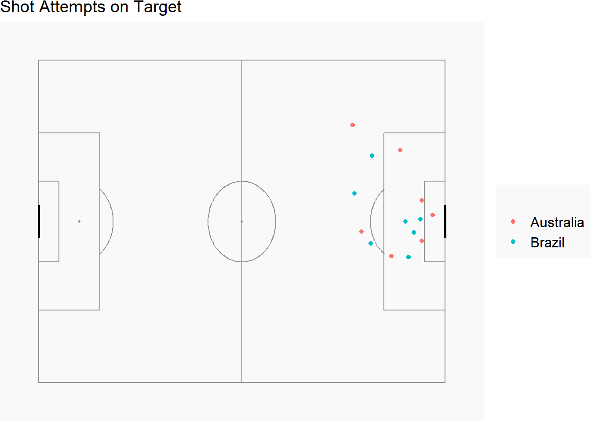
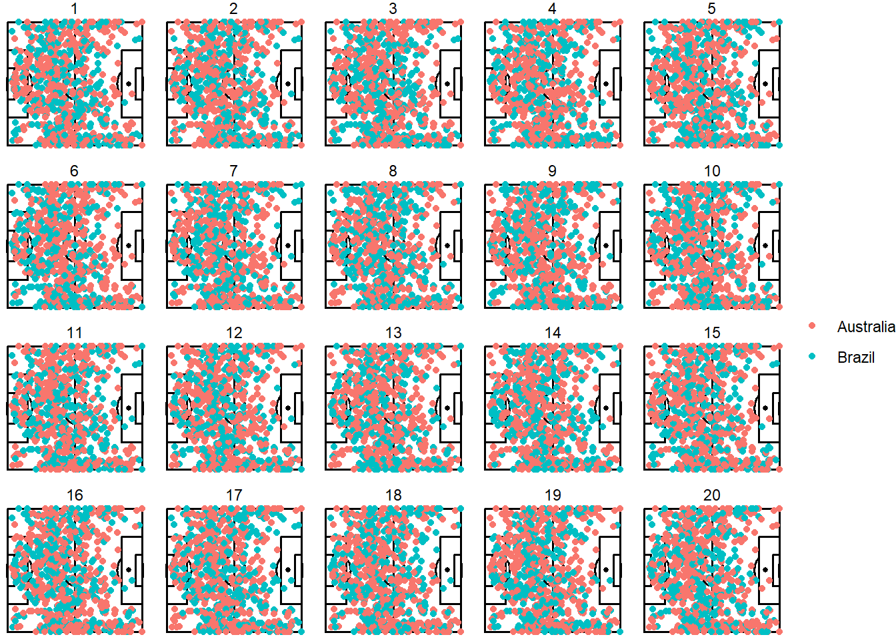
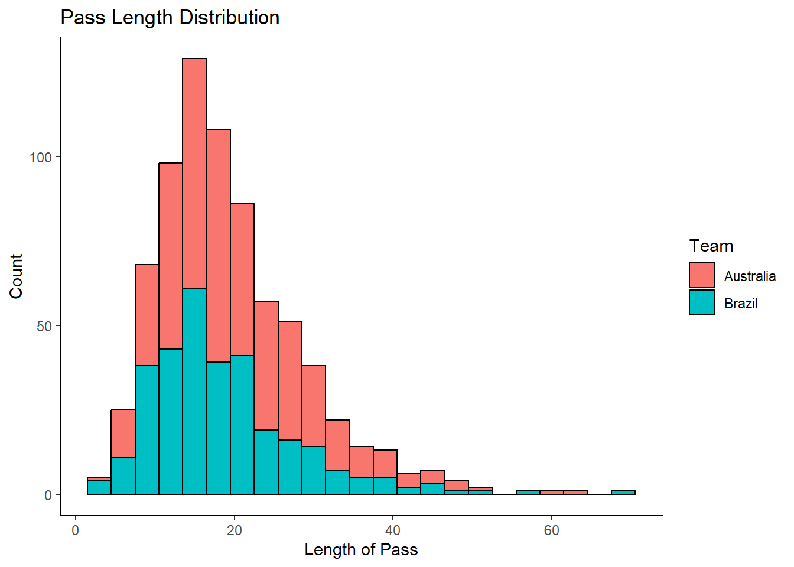

remotes::install_github("statsbomb/SDMTools")
remotes::install_github("statsbomb/StatsBombR")
devtools::install_github("FCrSTATS/SBpitch")Q4
Exercise 4
A very successful 2023 Women’s World Cup soccer was held in Australia and New Zealand in the last two months. Data from the last one held in 2019 can be downloaded from R using the package StatsBombR. The data for the Australia vs Brazil match have been downloaded and processed and made available in the file aus_brazil.rda. The match was played on June 14, 2019, in Stade de la Mosson, in France, and Australia won 3-2. This question explores the match data. It will help if you install these packages:
library(SDMTools)
library(StatsBombR)
library(SBpitch)
library(tidyverse)
library(knitr)
library(kableExtra)
library(nullabor)
load("data/aus_brazil.rda")A really nice introduction to working with the data is available here.
a. Make a plot of shots on goal made. by each team that looks like the following, and include your cleanly written code. (Note: 1. location has the position from which passes were made, in the form of an array. You can access the x and y values using location.x and location.y. 2. The positions have been processed so both teams are playing from left to right, so that it is easy to compare their play.)
shots_on_target <- aus_brazil |>
filter(shot.outcome.name %in% c("Goal", "Saved", "Blocked"))
create_Pitch() +
geom_point(data = shots_on_target, aes(
x = location.x,
y = location.y,
color = possession_team.name
)) +
labs(title = "Shot Attempts on Target", bold = TRUE, color = "")
NOTE: Blocked shots should not be considered as shots on goal as described in the rules.
b. Summarise the shots for each country by player. Would you say that shots were a team effort or dominated by certain players?
shots_summary <- shots_on_target |>
group_by(possession_team.name, player.name) |>
summarize(total_shots = n())
shots_summary <- shots_summary |>
arrange(desc(total_shots))
column_names <- c("Team", "Player", "Total Shots")
kable(shots_summary, "html", col.names = column_names, width = "100%") %>%
kable_paper(full_width = TRUE, position = "left") %>%
row_spec(which(shots_summary$possession_team.name == "Australia"), background = "orange", bold = TRUE, color = "white") %>%
row_spec(which(shots_summary$possession_team.name == "Brazil"), background = "darkgreen", bold = TRUE, color = "white")| Team | Player | Total Shots |
|---|---|---|
| Australia | Samantha May Kerr | 2 |
| Brazil | Andressa Alves da Silva | 2 |
| Australia | Alanna Stephanie Kennedy | 1 |
| Australia | Caitlin Jade Foord | 1 |
| Australia | Chloe Logarzo | 1 |
| Australia | Emily Gielnik | 1 |
| Australia | Tameka Yallop | 1 |
| Brazil | Cristiane Rozeira de Souza Silva | 1 |
| Brazil | Débora Cristiane de Oliveira | 1 |
| Brazil | Luana Bertolucci Paixão | 1 |
| Brazil | Marta Vieira da Silva | 1 |
| Brazil | Monica Hickmann Alves | 1 |
The shots on target between the 2 teams are equally divided at 7 each. Within both teams, there was only 1 player with 2 shots on target while the rest of the players had a single shot on target each. This signals towards team effort rather than player dependency.
c. Now let’s take a look at passes. The location from which passes are made could be characteristic of a team. Make a lineup to test whether the position from which a pass was made was different between Australia and Brazil. Conduct a visual inference analysis to determine if the actual plot can be distinguished from the null plots. Report your \(p\)-value, after asking 8 of your friends to judge your lineup, and summarise your findings.
pass_attempt <- aus_brazil |>
filter(type.name == "Pass" & is.na(pass.outcome.name))
pitch <- create_Pitch()
set.seed(18620)
ggplot(lineup(null_permute('possession_team.name'), pass_attempt),
aes(
x = location.x,
y = location.y,
color = possession_team.name
)) + annotate(
"rect",
xmin = 0,
xmax = 120,
ymin = 0,
ymax = 80,
fill = NA,
colour = "black",
size = 0.6
) + annotate(
"rect",
xmin = 0,
xmax = 60,
ymin = 0,
ymax = 80,
fill = NA,
colour = "black",
size = 0.6
) + annotate(
"rect",
xmin = 18,
xmax = 0,
ymin = 18,
ymax = 62,
fill = NA,
colour = "black",
size = 0.6
) + annotate(
"rect",
xmin = 102,
xmax = 120,
ymin = 18,
ymax = 62,
fill = NA,
colour = "black",
size = 0.6
) + annotate(
"rect",
xmin = 0,
xmax = 6,
ymin = 30,
ymax = 50,
fill = NA,
colour = "black",
size = 0.6
) + annotate(
"rect",
xmin = 120,
xmax = 114,
ymin = 30,
ymax = 50,
fill = NA,
colour = "black",
size = 0.6
) + annotate(
"rect",
xmin = 120,
xmax = 120.5,
ymin = 36,
ymax = 44,
fill = NA,
colour = "black",
size = 0.6
) + annotate(
"rect",
xmin = 0,
xmax = -0.5,
ymin = 36,
ymax = 44,
fill = NA,
colour = "black",
size = 0.6
) + annotate(
"segment",
x = 60,
xend = 60,
y = -0.5,
yend = 80.5,
colour = "black",
size = 0.6
) + annotate(
"segment",
x = 0,
xend = 0,
y = 0,
yend = 80,
colour = "black",
size = 0.6
) + annotate(
"segment",
x = 120,
xend = 120,
y = 0,
yend = 80,
colour = "black",
size = 0.6
) + theme(rect = element_blank(), line = element_blank()) + annotate(
"point",
x = 108 ,
y = 40,
colour = "black",
size = 1.05
) + annotate(
"path",
colour = "black",
size = 0.6,
x = 60 + 10 * cos(seq(0, 2 * pi, length.out = 2000)),
y = 40 + 10 * sin(seq(0, 2 * pi, length.out = 2000))
) + annotate(
"point",
x = 60 ,
y = 40,
colour = "black",
size = 1.05
) + annotate(
"path",
x = 12 + 10 * cos(seq(-0.3 * pi, 0.3 * pi, length.out = 30)),
size = 0.6,
y = 40 + 10 * sin(seq(-0.3 * pi, 0.3 * pi, length.out = 30)),
col = "black"
) + annotate(
"path",
x = 107.84 - 10 * cos(seq(-0.3 * pi, 0.3 * pi, length.out = 30)),
size = 0.6,
y = 40 - 10 * sin(seq(-0.3 * pi, 0.3 * pi, length.out = 30)),
col = "black"
) +
geom_point() +
labs(color = "") +
facet_wrap(~ .sample) +
theme_void() +
theme(axis.text = element_blank())
The null hypothesis (H0) is that the position from which a pass was made was different between Australia and Brazil. Below we compute the p-value:
pvisual(1, 8, 20) x simulated binom
[1,] 1 0.3208 0.3365796Only one person guessed the true plot correctly, but the reason was just a lucky guess. Most employed random guesses because they believed the plots look the same.
Since the p-value is large at 0.34, we reject the null and conclude that there is not enough evidence that the position from which a pass was made was different between Australia and Brazil at 5% significant level.
d. The type of passes can also be characteristic of a team’s play. Explore this with the variable pass.length, using a visual inference analysis.
ggplot(pass_attempt, aes(
x = pass.length,
fill = possession_team.name
)) +
geom_histogram(binwidth = 3, color = "black") +
labs(title = "Pass Length Distribution",
x = "Length of Pass",
y = "Count",
fill = "Team") +
theme_classic()
Using the histogram plotted above, we observe the data to be positively skewed. In the context of football/soccer, this may mean that both the teams in question relied less on long passes and employed relatively shorter passes (not necessarily grounded passes) in a bid to have better control of the game. Moreover, the histogram also shows that the Australian team overall significantly made more passes than Brazil. This could either mean that Australia enjoyed a larger share of possession and/or Brazil relied more on dribbling. Further data and analysis will be required to investigate what might be the case.
Reference List
VanDerWal J, Falconi L, Januchowski S, Shoo L, Storlie C (2014). SDMTools: Species Distribution Modelling Tools: Tools for processing data associated with species distribution modelling exercises. R package version 1.1-222, http://www.rforge.net/SDMTools/.
Yam D (2023). StatsBombR: Cleans and pulls StatsBomb data from the API. R package version 0.1.0.
rStats F (2023). SBpitch: Create a pitch plot ready for Statsbomb data. R package version 1.0.
Wickham H, Averick M, Bryan J, Chang W, McGowan LD, François R, Grolemund G, Hayes A, Henry L, Hester J, Kuhn M, Pedersen TL, Miller E, Bache SM, Müller K, Ooms J, Robinson D, Seidel DP, Spinu V, Takahashi K, Vaughan D, Wilke C, Woo K, Yutani H (2019). “Welcome to the tidyverse.” Journal of Open Source Software, 4(43),
- doi:10.21105/joss.01686 https://doi.org/10.21105/joss.01686.
Xie Y (2023). knitr: A General-Purpose Package for Dynamic Report Generation in R. R package version 1.43, https://yihui.org/knitr/.
Yihui Xie (2015) Dynamic Documents with R and knitr. 2nd edition. Chapman and Hall/CRC. ISBN 978-1498716963
Yihui Xie (2014) knitr: A Comprehensive Tool for Reproducible Research in R. In Victoria Stodden, Friedrich Leisch and Roger D. Peng, editors, Implementing Reproducible Computational Research. Chapman and Hall/CRC. ISBN 978-1466561595
Zhu H (2021). kableExtra: Construct Complex Table with ‘kable’ and Pipe Syntax. R package version 1.3.4, https://CRAN.R-project.org/package=kableExtra.
Buja, A., Cook, D., Hofmann, H., Lawrence, M., Lee, E.-K., Swayne, D. F, Wickham, H. (2009) Statistical Inference for Exploratory Data Analysis and Model Diagnostics Royal Society Philosophical Transactions A, 367(1906):4361-4383. URL http://rsta.royalsocietypublishing.org/content/367/1906/4361.article-info